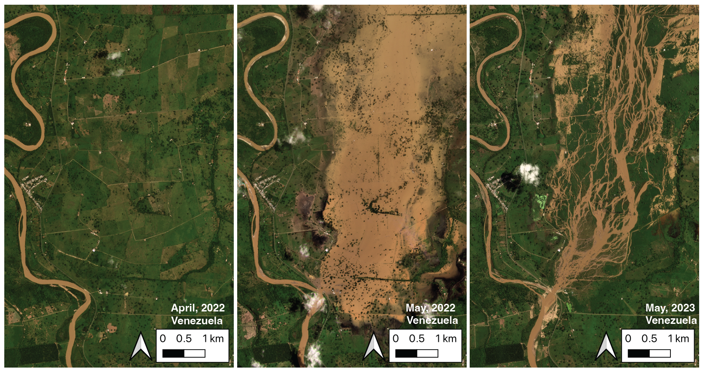
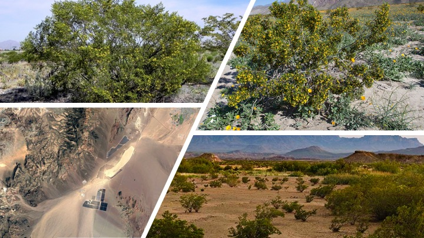

home / publications / cv
River Avulsion Research
My latest work involves an overlooked natural hazard: river avulsions. As seen in the figure, river avulsions occur when a river breaches its banks and begins to shift course on the floodplain. The resulting flooding can be some of the most intense on Earth, as the entire channel destabilizes catastrophically.
Key Findings
I tested two 80-year-old ideas of avulsion initiation by quantifying the topography around avulsing rivers. This work demonstrated that these two mechanisms, historically invoked separately, work together. I further presented a novel theoretical framework that identifies which rivers are vulnerable to avulsion and predicts the path of an avulsing river.
Technical Innovation
The research leveraged:
- State-of-the-art digital elevation models
- Novel applications of ICESat-2 (space-borne lidar platform)
- BASED (Boost-Assisted Stream Estimator for Depth) model
- Advanced geospatial data engineering pipelines

LakePy: Global Lake Water Level Database
LakePy addresses a critical gap in hydrological research: the fragmented nature of lake water level data across various federal, state, and academic databases. This project provides an open-source, well-documented, scalable solution for accessing global lake water level data.
View Project Documentation Read More on Medium
Geomorphic Controls on Vegetation
This research represents the largest analysis of creosote bush (Larrea tridentata) to date, examining approximately 23 million individual shrubs. The study investigates how landscape position and local-scale geomorphic features influence canopy volume and shrub spacing in a desert alluvial fan environment.
Key Findings
- East-facing surfaces host shrubs up to 5X larger than west-facing surfaces
- Older surfaces exhibit lower interspecific spacing
- Discovered transition point between biotic and abiotic control mechanisms
- Documented significant variations across different geomorphic surfaces
Technical Approach
- Remote sensing and ground-truthing of 23 million samples
- Advanced statistical methods including K-S testing and GLMs
- Comprehensive geomorphic surface classification

The Supply-Generated Sequence
This research introduces a new, high-resolution correlation panel demonstrating the usefulness of a novel lacustrine sequence stratigraphic concept: the Supply-Generated Sequence (SGS). This work addresses fundamental inadequacies in previous sequence stratigraphic interpretations of lacustrine systems.
Project Overview
An outcrop-based, near depositional-strike cross section of Uinta Basin fluvio-lacustrine interactions along the well-studied Nine Mile Canyon near Helper, Utah, highlights the strike variability of facies and depositional environments in the Sunnyside Interval deposits.
Key Findings
- Developed the Supply-Generated Sequence (SGS) concept
- Documented lateral complexity in sandstone event deposits
- Identified orbital forcing mechanisms in early Eocene Hyperthermal events
- Characterized the Sunnyside Interval System as a terminal “Supply-Controlled Splay Delta”